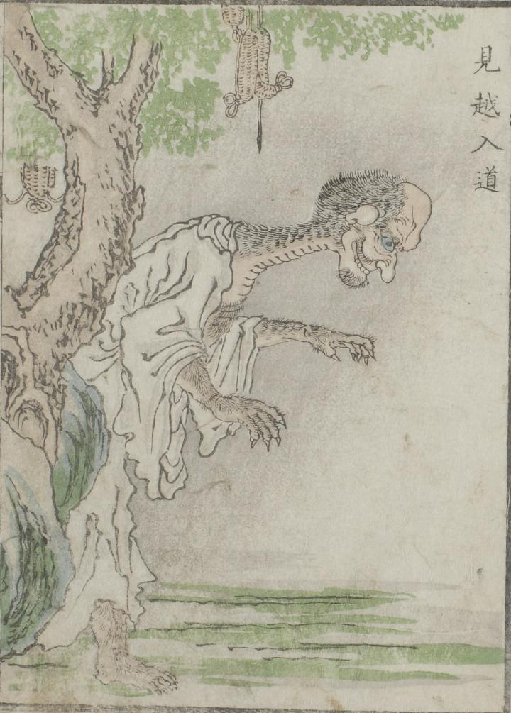

入道；ニュウドウ

草鞋がぶら下がった木の袂に見越入道が立っている。背が高く、首が長い。白衣から覗く肌には濃い体毛が生えている。また、手足には鋭い爪がある。
出典：親書誌：U426_nichibunken_0051：怪物画本；カイブツエホン／日付：2006／資源識別子：U426_nichibunken_0051_0021_0000
Copyright (c)2010- International Research Center for Japanese Studies, Kyoto, Japan. All rights reserved.